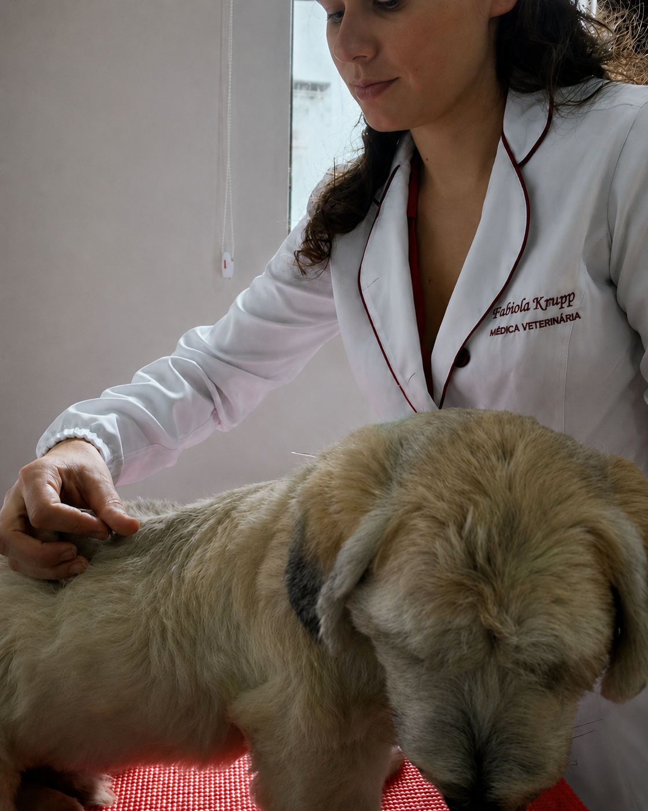
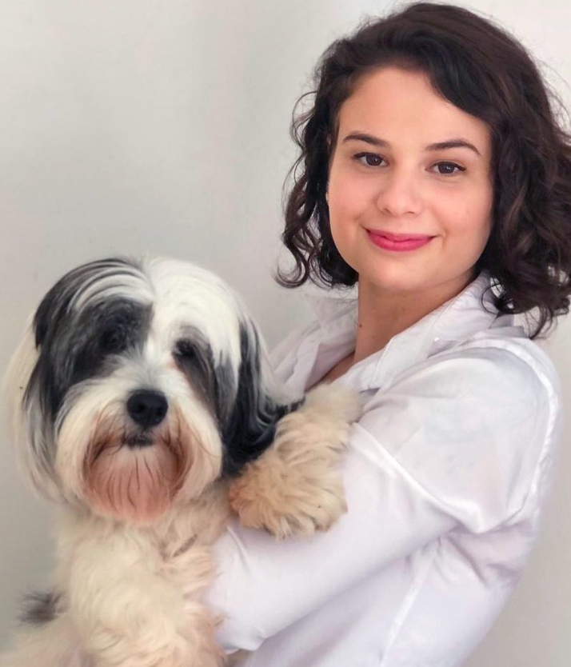
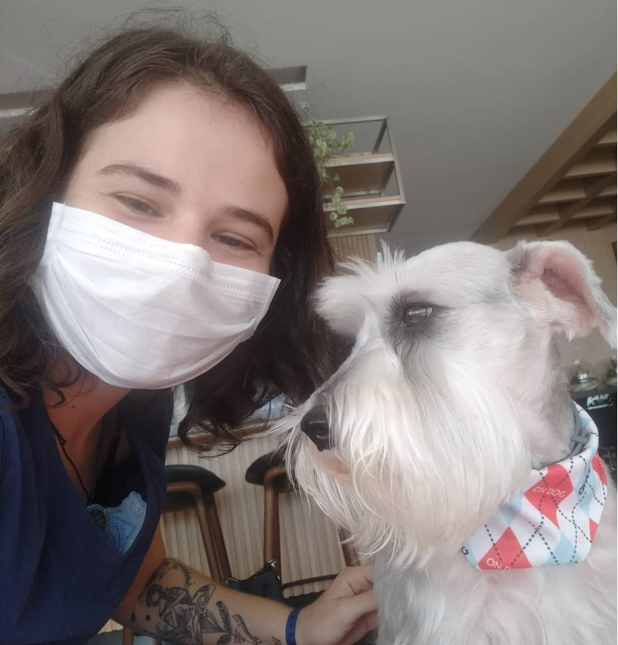
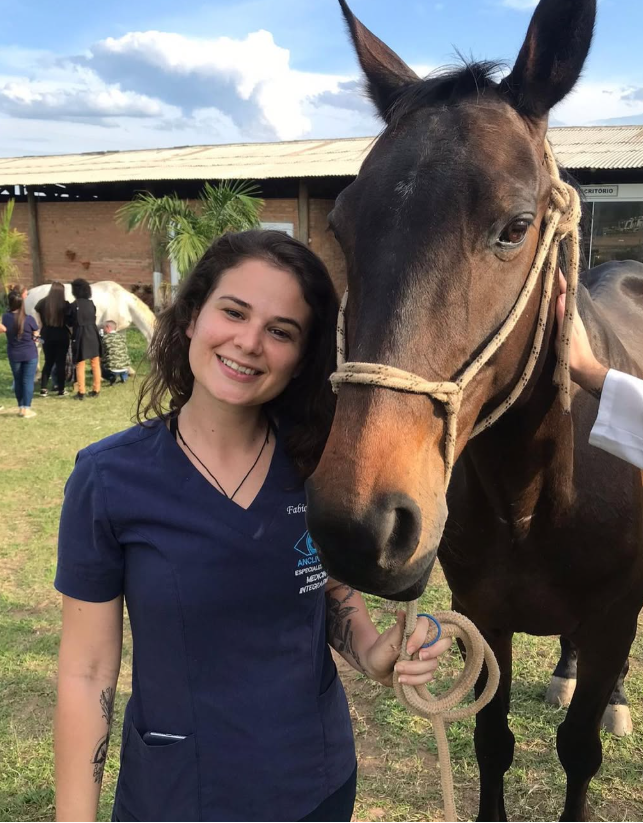

Cuidado integrativo para cães e gatos
Medicina Veterinária Integrativa para uma vida com mais conforto, presença e bem-estar.
Tratamentos que unem ciência, cuidado e terapias complementares para melhorar a qualidade de vida do seu pet, com planos individualizados e acompanhamento atento.
UEL
Formação em Medicina Veterinária
UNESP
Mestrado em Clínica Médica com ênfase em Acupuntura Veterinária na neonatologia
8+
Terapias e recursos integrativos
Dra. Fabíola Knupp
Atendimento integrativo com olhar clínico, escuta e cuidado individualizado.
Cuidado integrativo e individualizado.
Sobre a profissional
Sobre a Dra. Fabíola
Médica Veterinária formada pela UEL, mestre em Clínica Médica Veterinária pela UNESP Botucatu, com ênfase em Acupuntura Veterinária na neonatologia, e especializada em Medicina Integrativa e Acupuntura Veterinária. Atua com uma abordagem individualizada, buscando bem-estar, longevidade e maior qualidade de vida para cães e gatos.
Cuidado em contexto
Cada imagem representa uma etapa do bem-estar.
As fotos entram como apoio visual para explicar prevenção, vínculo, conforto e acompanhamento em diferentes fases da vida.
Prevenção
Começar cedo ajuda a construir saúde.
Orientar rotina, alimentação e suporte integrativo desde as primeiras fases favorece uma vida com longevidade e maior qualidade.
Cães e gatos
Planos diferentes para pacientes diferentes.
A abordagem integrativa considera espécie, idade, comportamento, histórico clínico e rotina da família.
Bem-estar
Conforto também é parte do tratamento.
Ambiente, manejo, dor, sono, intestino e imunidade entram na leitura completa do paciente.
Serviços
Um repertório terapêutico completo para cuidar do paciente como um todo.
Ferramentas terapêuticas complementares, consultorias e orientações selecionadas conforme histórico, exames, rotina e necessidades individuais de cada paciente.
Plano individualizado
Conversar sobre meu pet
Do diagnóstico às consultorias de acompanhamento: cada etapa é pensada para o pet real, não para um protocolo genérico.
Acupuntura Veterinária
Técnica terapêutica que estimula pontos específicos do corpo por meio de mecanismos neurofisiológicos, promovendo analgesia, modulação fisiológica e recuperação do organismo.
Ozonioterapia
Terapia complementar usada em protocolos individualizados para suporte inflamatório, imunológico e cicatricial.
Laserterapia
Aplicação de luz terapêutica para favorecer analgesia, reparação tecidual e recuperação funcional.
Terapia Neural
Abordagem terapêutica que utiliza estímulos em pontos específicos do organismo, buscando modular respostas do sistema nervoso e auxiliar na recuperação funcional.
Alimentação Natural
Planejamento nutricional individualizado e balanceado, elaborado com alimentos biologicamente apropriados para a espécie e adaptado às necessidades de cada paciente.
Homeopatia
Cuidado complementar voltado ao organismo como um todo, considerando histórico, comportamento e sinais clínicos.
Nutracêuticos
Suplementação estratégica para apoiar articulações, pele, intestino, imunidade e envelhecimento saudável.
PRP e PRF
Uso de plasma rico em plaquetas e plasma rico em fibrinas em protocolos indicados para regeneração, suporte ortopédico e cicatrização de feridas.
Implante de Ouro
Técnica com implantação permanente de pequenos fragmentos de ouro em pontos de acupuntura, promovendo estimulação contínua por mecanismos neurofisiológicos.
Fitoterapia Chinesa
Terapia com formulações individualizadas à base de plantas medicinais, integrada ao plano terapêutico para auxiliar no manejo de diversas condições clínicas.
Medicina Preventiva
O cuidado com a saúde começa antes do surgimento das doenças.
A Medicina Preventiva atua na identificação precoce de alterações, no acompanhamento da saúde e na implementação de estratégias individualizadas para promover longevidade e qualidade de vida aos pacientes.
- Avaliação clínica
- Vacinação individualizada
- Controle de parasitas
- Orientação nutricional
- Check-up preventivo
Rotina e movimento
Momentos de cuidado em movimento
Mobilidade
Acompanhamento para conforto e movimento.
Recuperação
Suporte em fases sensíveis e pós-cirúrgicas.
Qualidade de vida
Cuidado para a rotina real do pet e da família.
Casos atendidos
Como a Medicina Veterinária Integrativa pode ajudar?
Cada paciente é único. Por isso, a Medicina Veterinária Integrativa atua de forma complementar e individualizada, auxiliando na prevenção de doenças, no tratamento, na reabilitação e na promoção da qualidade de vida. Após uma avaliação clínica criteriosa, é elaborado um plano terapêutico personalizado, respeitando diagnóstico, histórico, exames e resposta individual.
- Controle da dor
- Ortopedia e reabilitação
- Neurologia
- Dermatologia integrativa
- Recuperação pós-cirúrgica
- Pacientes internados
- Pacientes geriátricos
- Cuidados paliativos
- Saúde intestinal
- Oncologia integrativa
- Prevenção de doenças
- Qualidade de vida
Na prática
Experiência real com pacientes, tutores e diferentes contextos de cuidado.
Seu pet é avaliado com atenção, carinho e critério clínico, para que cada orientação faça sentido na rotina da família e nas necessidades reais do paciente.

Acupuntura veterinária
Atendimento com técnica e delicadeza.

Clínica de pequenos animais
Vínculo com o paciente e a família.

Rotina clínica
Acompanhamento próximo e humanizado.

Vivência veterinária
Contato com diferentes animais e ambientes de cuidado.
Educação
Cursos, palestras, mentorias e parcerias profissionais.
Além da prática clínica, a Dra. Fabíola dedica-se à formação e ao aperfeiçoamento de médicos-veterinários, ministrando aulas em cursos livres e de pós-graduação, oferecendo mentorias e treinamentos em Medicina Veterinária Integrativa para estudantes e profissionais, além de orientar Trabalhos de Conclusão de Curso (TCC).
Ver próximos cursosDepoimentos
Relatos de tutores
Avaliações reais compartilhadas por tutores no Google, reforçando a confiança, o cuidado e a experiência no atendimento integrativo.
5,0
4 avaliações no Google
★★★★★
“Eu falo da Dra Fabíola para todo mundo que eu conheço e tem um amor pet na vida. O que ela fez pelo meu Zy, eu nunca vou conseguir retribuir. O Zyper era um cão idoso que entrou no paliativo devido a idade avançada e um câncer no fígado.”
Raissa Caramanico Tutora do Zy★★★★★
“Profissional muito carinhosa com minhas gatas.”
Raul Palomares Tutor de gatas★★★★★
“Conheci a Fabíola por indicação de uma amiga que era cliente dela. É visível a sua paixão pelos animais e pela profissão, sempre nos atendeu muito bem, tirando todas as dúvidas e estudando cada vez mais para nos proporcionar o melhor.”
Fabio Barros Tutor atendido por indicação★★★★★
“A Fabíola é uma veterinária excelente, amorosa, cuidadosa e que respeita muito o jeito de cada animalzinho. Minhas gatinhas amam ela e sempre ficaram muito calmas nos atendimentos.”
Sarah Tutora da Gaia e AtenaContato
Agende uma avaliação para o seu pet
Envie uma mensagem para conversar sobre o caso do seu cão ou gato e entender qual caminho de cuidado pode fazer sentido.
Chamar no WhatsApp
@vet.fabiolaknupp
Atendimento domiciliar: conforto e bem-estar na consulta